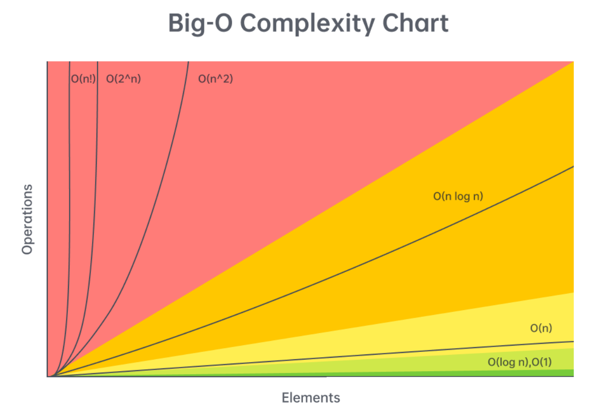
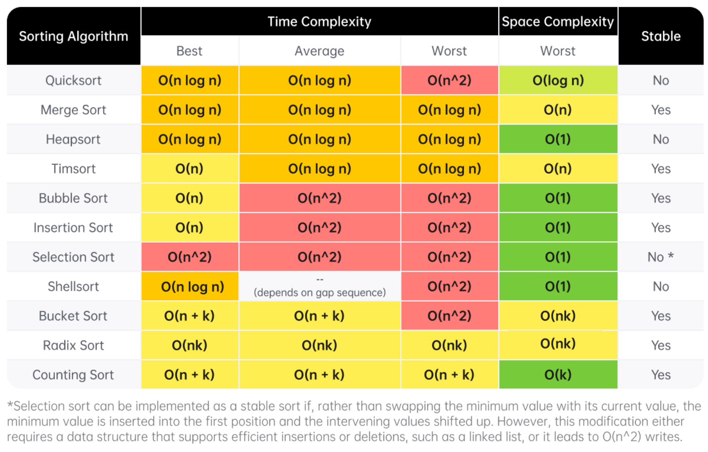
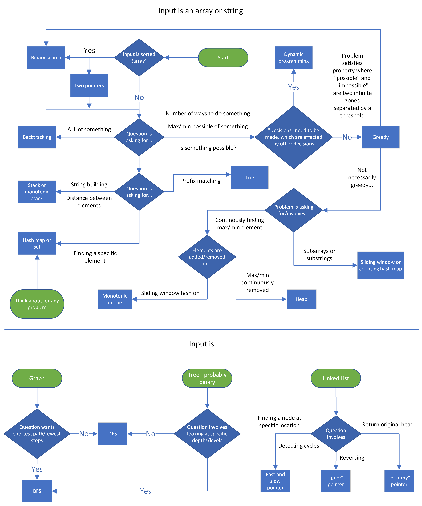

Big-O & DS/A Cheatsheet
Time and space complexity of every common data structure operation, plus input-size heuristics for picking the right approach fast.
1 Big-O Complexity Chart

2 Arrays (Dynamic Array)
Given n = arr.length:
| Operation | Time |
|---|---|
| Add / remove at end | O(1) amortized |
| Add / remove at arbitrary index | O(n) |
| Access / modify at arbitrary index | O(1) |
| Check if element exists | O(n) |
| Two pointers / sliding window | O(n·k) where k = work per iteration |
| Build prefix sum | O(n) |
| Query subarray sum (given prefix sum) | O(1) |
3 Strings (Immutable)
Given n = s.length:
| Operation | Time |
|---|---|
| Add or remove character | O(n) |
| Access element at arbitrary index | O(1) |
| Concatenation (other string length m) | O(n+m) |
| Create substring of length m | O(m) |
| Two pointers / sliding window | O(n·k) |
| Join array → string | O(n) |
4 Linked Lists
Given n = number of nodes:
| Operation | Time |
|---|---|
| Add / remove given pointer to location | O(1) |
| Add / remove given pointer (doubly linked, at location) | O(1) |
| Add / remove at arbitrary position (no pointer) | O(n) |
| Access arbitrary position (no pointer) | O(n) |
| Check if element exists | O(n) |
| Reverse between positions i and j | O(j−i) |
| Detect cycle (fast-slow pointers) | O(n) |
5 Hash Table / Set
Given n = dict.length. Note: O(1) is relative to n; hashing a string key costs O(m) where m = key length.
| Operation | Time |
|---|---|
| Add / remove key-value pair | O(1) |
| Check if key exists | O(1) |
| Check if value exists | O(n) |
| Access / modify value by key | O(1) |
| Iterate over all keys / values | O(n) |
| Set: add / remove element | O(1) |
| Set: check if element exists | O(1) |
6 Stack & Queue
Stack (dynamic array implementation), Queue (doubly linked list implementation):
| Operation | Stack | Queue |
|---|---|---|
| Push / Enqueue | O(1) | O(1) |
| Pop / Dequeue | O(1) | O(1) |
| Peek (top / front) | O(1) | O(1) |
| Access by index | O(1) | O(n) |
| Check if element exists | O(n) | O(n) |
7 Binary Trees & BST
Given n = number of nodes:
| Operation | Time |
|---|---|
| DFS / BFS traversal (general binary tree) | O(n·k), k = work per node |
| BST: add / remove / search (balanced) | O(log n) avg |
| BST: add / remove / search (degenerate) | O(n) worst |
8 Heap / Priority Queue
Given n = heap.length (min-heap):
| Operation | Time |
|---|---|
| Add element | O(log n) |
| Remove minimum | O(log n) |
| Find minimum (peek) | O(1) |
| Check if element exists | O(n) |
9 Binary Search
Given n = size of initial search space:
| Case | Time |
|---|---|
| Worst case | O(log n) |
10 Miscellaneous
| Operation | Time | Space |
|---|---|---|
| Sorting | O(n log n) | O(n) or O(log n) |
| DFS / BFS on graph | O(n·k + e) | O(n) or O(n+e) |
| Dynamic programming | O(n·k) states × work | O(n) states |
n = nodes, e = edges, k = work per node/state.
11 Input Sizes → Expected Complexity
n ≤ 10
Expected complexity likely has a factorial or exponential with base > 2 — O(n²·n!) or O(4ⁿ). This is extremely small; almost any correct algorithm will be fast enough. Think backtracking or brute-force recursion.
10 < n ≤ 20
Expected complexity involves O(2ⁿ). Any higher base or factorial is too slow (3²⁰ ≈ 3.5 billion; 20! is much larger). O(2ⁿ) usually means you're considering all subsets/subsequences — for each element, take it or don't. Consider backtracking and recursion.
20 < n ≤ 100
Exponentials are too slow. Upper bound is likely O(n³). Problems marked "Easy" on LeetCode often have this constraint — deceptively, because there may be an O(n) solution, but the small bound lets brute force pass. Consider nested loops; analyze the slow steps and try improving them with hash maps or heaps.
100 < n ≤ 1,000
O(n²) should be sufficient as long as the constant factor isn't too large. Nested loops are expected here and O(n²) is often the optimal complexity in this range — it may not be possible to improve.
1,000 < n ≤ 100,000
The most common LeetCode constraint. Slowest acceptable: O(n log n). Linear O(n) is the common goal. O(n²) is unacceptable — simulate nested loop behavior in O(1) or O(log n) using:
- Hash map
- Two pointers / sliding window
- Monotonic stack
- Binary search
- Heap
- A combination of the above
100,000 < n ≤ 1,000,000
Rare constraint. Likely requires O(n). O(n log n) is usually safe with a small constant factor. A hash map will almost certainly be involved.
n > 1,000,000
Typically n ≥ 10⁹. Expected complexity is O(log n) or O(1). You must either drastically reduce the search space each iteration (binary search) or use constant-time tricks (math, clever hash map usage).
| n | Expected Complexity | Typical Approach |
|---|---|---|
| ≤ 10 | O(n!·n²) or O(4ⁿ) | Brute force, backtracking |
| ≤ 20 | O(2ⁿ) | Bitmask DP, backtracking, subsets |
| ≤ 100 | O(n³) | Nested loops, brute force is fine |
| ≤ 1,000 | O(n²) | Nested loops, usually optimal here |
| ≤ 100,000 | O(n log n) or O(n) | Sorting, heap, sliding window, binary search, hash map, monotonic stack |
| ≤ 1,000,000 | O(n) | Linear scan, hash map essential |
| > 10⁶ | O(log n) or O(1) | Binary search, math trick, clever hash |
12 Sorting Algorithms
All major programming languages have a built-in sort. It is always correct to say sorting costs O(n log n), where n is the number of elements. The specific algorithm varies by language — Python uses Timsort; C++ is not mandated by spec and varies.

See Sorting Algorithm Complexity for a full breakdown of Timsort vs Heapsort vs Counting Sort and when theory diverges from practice.
13 General DS/A Flowchart
A flowchart to help decide which data structure or algorithm to use. Note: this is intentionally general — it cannot cover every scenario, and more advanced algorithms like Dijkstra's are excluded.

14 Interview Stages Cheat Sheet
A condensed summary of the Stages of an Interview guide. Print this and keep it visible during a remote interview.
Stage 1 — Introductions
- Rehearsed 30–60 sec intro (education, experience, interests)
- Smile and speak with confidence
- Pay attention when the interviewer talks about themselves — use it for questions later
Stage 2 — Problem Statement
- Paraphrase the problem back after they read it
- Ask clarifying questions: input types, sorted/unsorted, empty input, invalid input, expected size
- Walk through one example test case to confirm understanding
Stage 3 — Brainstorming DS&A
- Always think out loud
- Break it down: what do I need to do → what DS/A accomplishes it efficiently?
- Be receptive to interviewer hints — they want you to succeed
- Explain your approach and get agreement before coding
Stage 4 — Implementation
- Narrate decisions as you code ("this Set prevents revisiting nodes")
- Write clean, convention-following code
- Avoid duplicate logic — use helpers or loops
- Stuck? Communicate, don't go silent
- Brute force first is fine — acknowledge it, then optimize together
Stage 5 — Testing & Debugging
- Track variable values in writing as you walk through cases
- Condense trivial steps ("after this loop, prefix sum = …")
- Use print statements if the environment allows running code
Stage 6 — Follow-ups
- Time and space complexity — worst case, average if significantly different
- Justify your data structure / algorithm choices
- If asked "can it be improved?" — answer is usually yes
Stage 7 — Outro
- Have 2–3 questions about the company/role ready
- Stay engaged, smile, ask follow-up questions to their answers